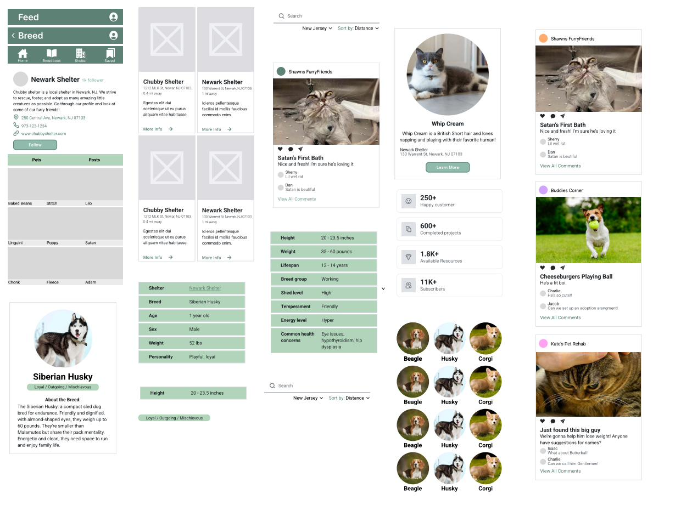
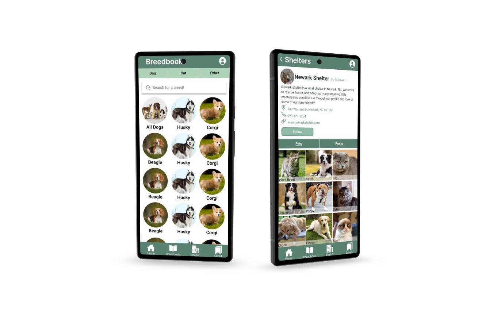
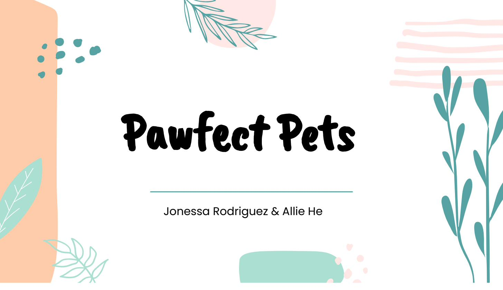
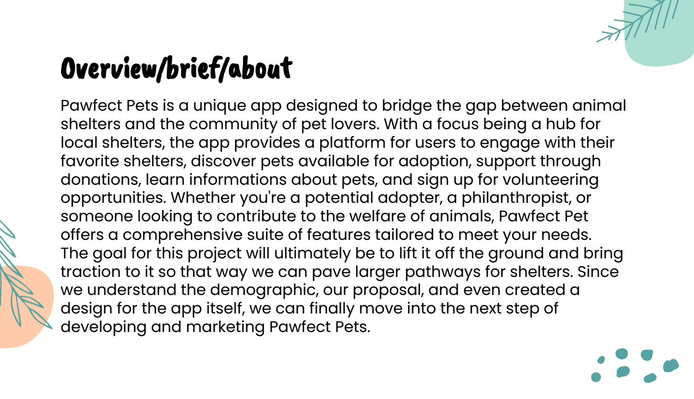

A social mobile platform connecting aspiring pet owners with local shelters — making the adoption process transparent, breed-informed, and community-driven. 1st place at NJIT Design Jam.
Pet adoption should be one of the most joyful decisions a person makes. In practice, it's often overwhelming, opaque, and fragmented. Aspiring pet owners don't know which shelter has the right animal, which breed fits their lifestyle, or whether the animal they fell in love with online is still available. Shelters, meanwhile, struggle to tell their story digitally and connect with the right adopters.
We began with rapid research: a mix of secondary research on shelter adoption patterns and quick interviews with people who had recently adopted a pet or tried to and given up. The gap was immediate and consistent: people didn't trust the information online, didn't know where to start with breeds, and felt disconnected from shelters as organizations (not just databases of animals).
A secondary problem emerged: many people who wanted to adopt ended up buying from breeders, not because they preferred it, but because the breeder experience felt more legible and confident-making. Fixing adoption meant matching that clarity and trustworthiness.
Research synthesis surfaced three core user needs that any successful solution had to address:
First-time adopters need to understand breed temperament, energy level, health concerns, and lifestyle fit before they even look at individual animals.
Adopters need to see shelters as organizations with identity and mission — not just as databases. Location, contact, available animals, and social presence all matter.
People trust other adopters. A community feed where existing owners share their experience creates the social proof that makes the decision feel safer.
We also identified a fourth component: a saved/wishlist feature — because adoption is rarely an impulse decision. People want to track animals and breeds they're considering over time.
The structural insight was to model Pawfect Pets on a pattern users already trusted: a social media app. Navigation tabs (Home, Breedbook, Shelter, Saved) match familiar patterns, lowering the learning curve. But within that shell, each section was purpose-built for adoption decision-making.
The Breedbook — our invention — was the key differentiator. A searchable, filterable encyclopedia of dog, cat, and small pet breeds, each with: temperament tags, weight/height/lifespan specs, energy level, common health concerns, and compatibility notes. This was the "do your research" phase of adoption, made visual and navigable.
Early wireframes explored different navigation models: a tab-based bottom nav (chosen), a card-based feed-first layout, and a map-first approach for shelter discovery. We chose tab-based because it let each module develop depth without overwhelming the home screen.

From wireframe to high-fidelity: the progression from low-fi layout explorations to final screens across all four app sections.
We produced a high-fidelity Figma prototype covering all four core sections of the app. The visual design: warm greens and earth tones — trustworthy and inviting without being clinical or cold. Typography leaned clean and legible. Pet photography was prominent: if you're choosing an animal companion, the animal should be the hero.

Final hi-fi screens: Breedbook (left) showing searchable breed categories, and Shelter profile (right) with social-style layout.


High-fidelity Figma prototype: from individual breed profiles to the community social feed where adopters share their stories.
The shelter profile took significant iteration. Early versions looked like a directory listing. Final version looks like a social profile — profile photo, bio, follow button, and a dual tab showing available pets and community posts. This reframing transformed shelters from databases into organizations with personality, which was exactly the trust problem research had identified.
The Breedbook breed detail page surfaced everything a prospective owner needs: health concerns (which often determine long-term costs), personality tags, and a rescue-availability indicator showing whether this breed is commonly available in local shelters. This last detail emerged from an interview — one user had spent months looking for a Husky to adopt before realizing there were several in the shelter she'd walked past every day.
Pawfect Pets won 1st place at the NJIT Design Jam. Judge feedback highlighted the research foundation and the decision to build something that addressed adoption behavior change — not just a prettier version of an existing shelter website.
The Breedbook, in particular, was cited as a genuinely novel concept: no major adoption platform currently offers a full breed education resource embedded in the adoption flow. The judges felt it addressed a real gap in how first-time adopters make decisions.
If this were a real product, the next phase would be usability testing with first-time adopters — specifically testing whether the Breedbook-first information architecture actually changes decision-making behavior, or whether people skip it and go straight to browsing animals. My hypothesis is that engagement with breed content predicts adoption follow-through, but we'd need data to know for sure.
I'd also explore a shelter-side product: tools for shelters to manage their profiles, update availability, and respond to community posts. The adopter experience is only as good as the data shelters can maintain — and right now, that's the weakest link in the system.